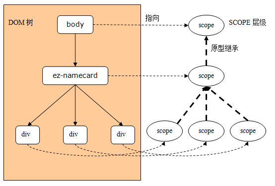

层级的作用域
重点：在AngularJS中，ng-app开始的DOM子树上，每个DOM对象都有一个对应的scope对象。
比如，在我们的示例中，body对象对应一个scope对象（因为body元素有ng-app属性，所以 这个scope就是$rootScope对象），ez-namecard对象也对应一个scope对象......

在默认情况下，一个DOM子元素不会创建新的作用域，
也就是说，这个子元素所对应的 scope对象，其实就是它的最近一级的祖先对象对应的scope对象。
比如，在我们的例子中， ez-namecard对应的scope对象，就是它的父对象即body对象的scope对象，
恰好也就是 $rootScope对象；而ez-namecard有3个div子元素对应的scope对象，也是$rootScope对象。
注意：有些指令会导致创建新的作用域，比如ng-controller。
如果在一个DOM对象上创建了新 的作用域，那么这个scope对象的原型是其最近一级的组件对象的scope对象。
比如在我们的例子中，如果在ez-namecard上使用ng-controller指令，
那么ez-namecard 对应的scope对象就不再是body对应的$rootScope对象，
但是由于是原型继承，所以通过 这个scope依然可以访问到sb变量。